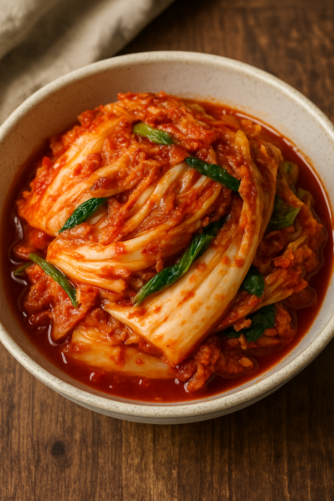

Japchae
El Japchae es un plato tradicional coreano que consiste en fideos transparentes (hechos de almidón de batata) salteados con verduras frescas, carne (generalmente res o cerdo) y a veces setas, todo sazonado con salsa de soya y aceite de sésamo. Su textura suave y ligeramente masticable, combinada con el sabor umami de los ingredientes, lo convierte en un favorito en Corea.
Este plato tiene un significado cultural importante en Corea, ya que a menudo se prepara para celebraciones como fiestas, cumpleaños y festividades tradicionales como el Seollal (Año Nuevo Lunar) y el Chuseok (Festival de la Cosecha). Es un plato versátil siento adaptable a dietas veganas o vegetarianas.
En la actualidad. Es además una opción saludable, ya que contiene una variedad de verduras y proteínas, y es relativamente bajo en calorías. El Japchae es un plato que representa la riqueza y diversidad de la cocina coreana.
Kimchi
El kimchi es un plato tradicional coreano hecho a base de verduras fermentadas, principalmente repollo (col napa) y rábanos, sazonados con una mezcla de especias que incluye chile en polvo, ajo, jengibre y sal. Este proceso de fermentación no solo le da su sabor característico, ácido y picante, sino que también lo convierte en un alimento probiótico, beneficioso para la salud digestiva. Es un acompañamiento esencial en la dieta coreana y se sirve en casi todas las comidas.
El kimchi tiene una profunda raíz cultural en Corea y está presente en momentos importantes de la vida cotidiana y las festividades. Tradicionalmente, las familias se reunían para preparar grandes cantidades de kimchi durante el Kimjang, un evento anual que marca la llegada del invierno. Esta práctica, que ha sido reconocida por la UNESCO como Patrimonio Cultural Inmaterial, refleja el espíritu comunitario y la importancia de compartir en la cultura coreana. Además, existen cientos de variedades de kimchi, cada una con sabores y estilos regionales únicos.
Hoy en día, el kimchi ha ganado popularidad a nivel mundial debido a su sabor único y sus beneficios para la salud. Es rico en vitaminas, minerales y bacterias beneficiosas para el intestino, lo que lo convierte en un superalimento muy valorado.